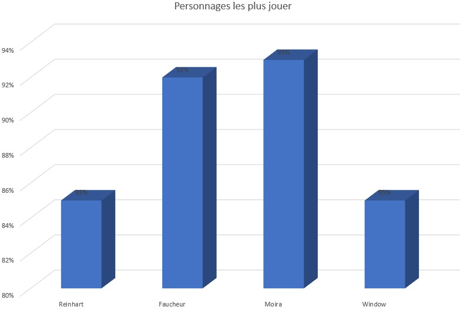

Overstats



En vous inscrivant sur ce site vous pourrez ajout vos stats, que ca soit en partie compétitive, en partie rapide et pour n'importe quelles personnages. Ce qui vous permettra de pouvoir comparer vos performance suivant les personnages jouaient sur certaines maps ainsi que votre évolutions sur le jeu